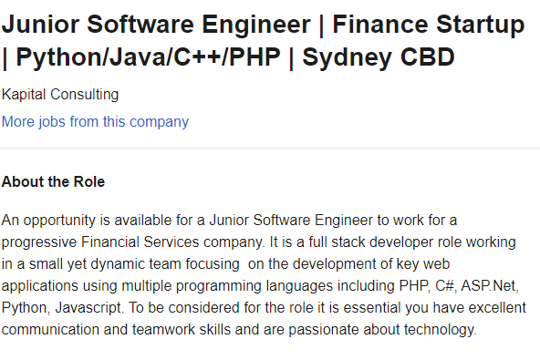

My IT Profile
- From a personal perspective I’ve always had an interest in IT. being part of a generation where interacting with technology was integral, it’s just a part of my everyday life. On a personal level I spend most of my spare time playing video games. Professionally though, IT is something entirely different. I absolutely love problem solving, thinking outside the box, or remaking old processes into something new and more efficient. So professionally I’m attracted to the idea of programming, what that specifically means in 3 years’ time, I’m not sure. Perhaps I’ll look at software development or security, but right now that means I’m passionate about learning new languages!
- I chose to come to RMIT because they offered what I needed through OUA. A flexible course that I could do at a reasonable pace whilst working full time. It’s very hard to put the brakes on and go back to studying, but this means I get the best of both worlds through a little hard work.
- I expect to learn more in depth about the many and varied paths that I can take in IT. In addition to this, I hope to learn more about hardware and how hardware and software interact. I expect to learn more about programming languages as well.
My Ideal IT Job / Job Link

- Job Description:Software developer to assist a start-up business in developing both their own inhouse systems, as well as create cutting edge web applications for customer interaction (and hopefully room for personal inventing, of new technologies for dealing with finance) I want to be able to work with business’s and help them grow by implanting
- Skills: Software Development skills in the following languages; PHP, C#, ASP.Net, Python and Javascript.
- My current skill set: Minor knowledge of both Python and Javascript.
- My plan for developing my skill set:I plan to complete the bachelor through RMIT, whilst on the side developing my understanding of various programming languages. In addition to this, throughout my degree I’ll be selecting as many programming specific electives as possible.
Personality Test Results